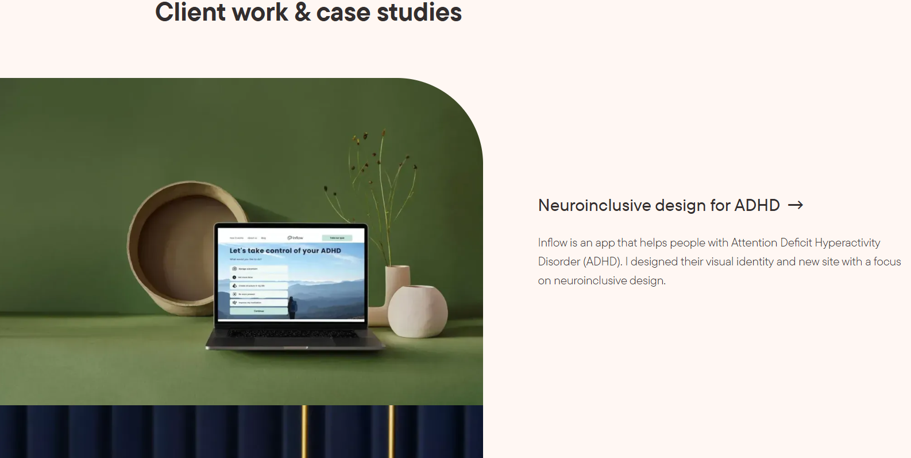

<section class="w-100 h-100">
  <ion-row style="height: 15%;">
    <ion-col class="flex-center" *ngFor="let cat of allCat">
      <ion-item button (click)="changeProject()">
        <ion-avatar slot="start">
          
        </ion-avatar>
        <ion-label>{{cat.name}}</ion-label>
      </ion-item>
    </ion-col>
  </ion-row>


  <ion-row style="height: 85%;">
    <ion-col *ngIf="shows" size="4" class="h-100 flex ion-align-items-end" style="padding-left: 0; padding-bottom: 0;" @inLeftBottom>
      <div class="w-100 image-container">
        
      </div>
    </ion-col>
    <ion-col size="8" class="h-100"></ion-col>
  </ion-row>
</section>
